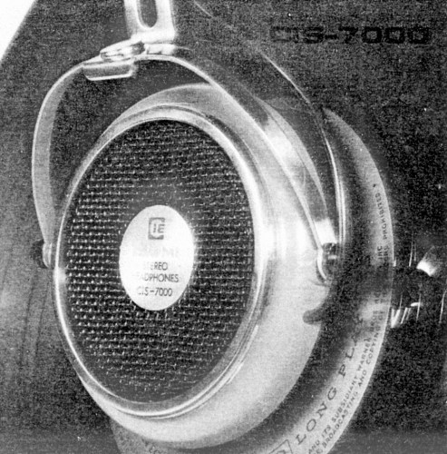
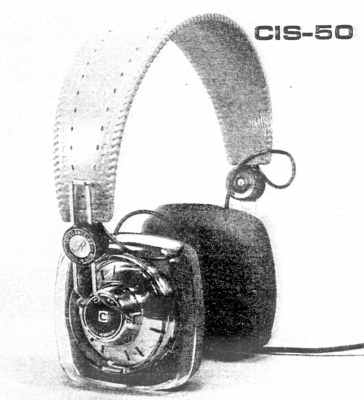
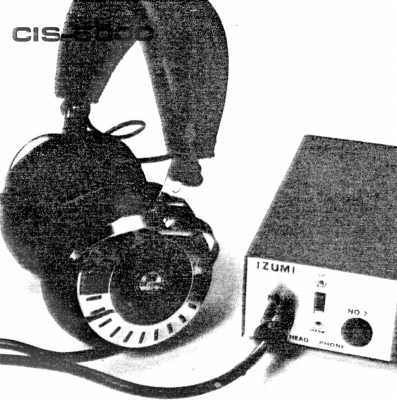
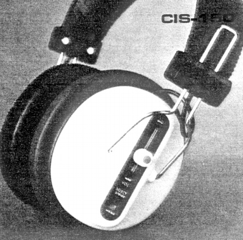
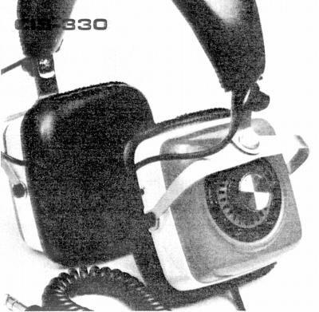
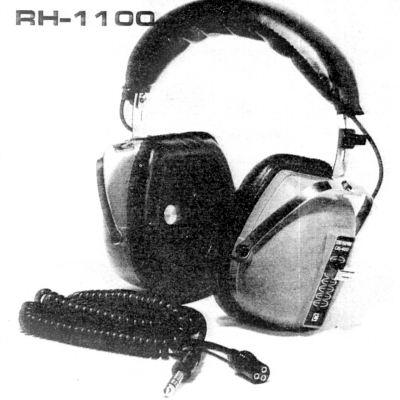
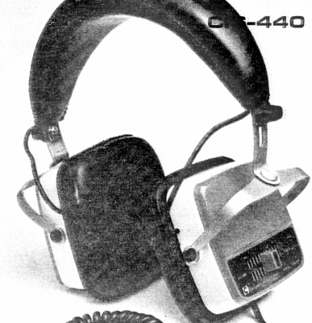
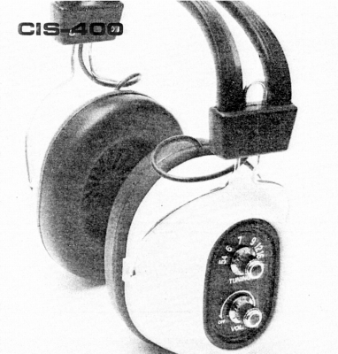

IZUMI（イズミ）
1970年代にヘッドフォンの輸出(主としてヨーロッパ向け）を行っていた泉電子工業の製品。本社は東京都世田谷区、工場は東京都狛江市と茨城県にあったようだ。現在の消息は不明。1975年の「ヘッドフォンフェスティバル」の参加企業の一つだった。その時点で「ヘッドフォンを作り続けて15年」と説明されており、少なくとも1960年頃にはヘッドフォン造りにたずさわっていたようだ。
ヘッドフォンメーカーとしての状況も、依然として不明な点が多い。オーディオ誌のバックナンバーでは「SDM」型という独自形式のヘッドフォンを開発していたことぐらいしか見当たらない。（「SDM」型については続・日本初？参照）。最近、国会図書館に1975年の「ヘッドフォンフェスティバル」のパンフレットが所蔵されていることが判明し、ダイナミック型、コンデンサー型の各種のヘッドフォンを製造していたことがわかったが、どの程度国内販売を行っていたかは、不明である。現時点ではCIS-7000という型番のダイナミック型ヘッドフォンに7,900円という邦貨が記されていたことのみ判明した。コンデンサー型を含めすべて「CSI」の型番を持っていたようだ。他にヘッドフォン・ラジオで「RH」の型番の機種があったようだ。
CSI-7000

■価格 \7,900
■型式 ダイナミック型
■振動板 7�o厚マイラーコーン
■インピーダンス
■再生周波数帯域
■許容入力
■感度
■コード 2.5mカールコード
■重量 190g
■発売 1975年頃
■販売終了
■備考 第1回ヘッドフォンフェスティバルに出品
その他の機種
CIS-50

振動板 1・1/2インチ(約38�o）
珍しい透明なケースとカラフルな
ボディ・イヤパッドの機種だったようだ。
CIS-5000

コンデンサー型ヘッドフォン。エレクトレットタイプのようだ。
CIS-150

スライド式ボリュウム装備の廉価機らしい。
CIS-330

振動板 2・1/4インチ(約57�o）マイラーコーン
ツートンカラーの高級機種らしい。
CIS-400

振動板 3インチ(約75�o）
スライド式ボリュウム付きの普及機。コード着脱式？
1975年時点で発売後4年が経過していたらしい。
CIS-440

スライド式ボリュウム装備の標準的モデルだったらしい。
RH-1100

AMラジオ内蔵の機種。
注 商品の説明から、CIS-400とRH-1000は資料が入れ替わっていると判断しております。